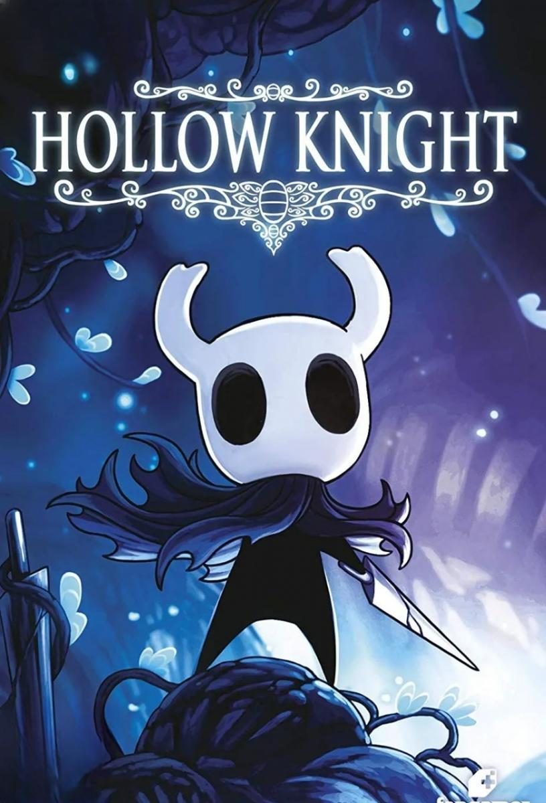

hollow knight

HOLLOW KNIGHT

No me importa pensar. No hay voluntad que romper. Sin voz para llorar.

requisitos
| requisitos minimos | requisitos recomendados |
|---|---|
|
|
Hollow Knight
Hollow Knight es un videojuego perteneciente al género metroidvania desarrollado y publicado por Team Cherry. El videojuego fue inicialmente lanzado para Microsoft Windows en febrero de 2017, y más tarde para macOS y Linux en abril de 2017. La adaptación para Nintendo Switch fue lanzada el 12 de junio de 2018.
historia
"Hollow Knight" es un juego de acción y aventura desarrollado por Team Cherry, ambientado en el vasto y enigmático reino de Hallownest. La historia se centra en un caballero sin nombre, conocido simplemente como el "Caballero", quien llega a Hallownest en busca de respuestas sobre su propia existencia y el destino del reino.
Hallownest fue una vez un próspero reino habitado por insectos y criaturas mágicas, gobernado por la Reina Blanca. Sin embargo, una misteriosa plaga conocida como la "Abyss" comenzó a corroer el reino, transformando a sus habitantes en sombras y monstruos. A medida que la plaga se expandía, la Reina Blanca y otros seres poderosos, como el "Hollow Knight", intentaron contenerla, pero sus esfuerzos fueron en vano.
El Caballero explora diversos entornos, desde las oscuras profundidades del Abismo hasta los vibrantes Jardines de la Reina. A lo largo de su viaje, se encuentra con personajes memorables, como la valiente guerrera Hornet y el trágico Grimm, quienes ofrecen pistas sobre la historia de Hallownest y sus secretos.
A medida que avanza, el Caballero descubre la conexión entre su propia identidad y la historia del Hollow Knight, un ser creado para contener la plaga. A través de múltiples enfrentamientos y desafíos, el jugador debe desentrañar la verdad sobre el reino y su propia naturaleza, enfrentando a poderosos jefes y desvelando la compleja narrativa que rodea a Hallownest.
La historia de "Hollow Knight" es rica en simbolismo y profundidad, explorando temas de sacrificio, identidad y la lucha contra la desesperación. Con su estilo artístico único y su atmósfera envolvente, el juego ha dejado una huella imborrable en la comunidad de jugadores y se ha consolidado como un clásico moderno en el género de los metroidvania.

jefes oniricos
jefes oniricos
jefe Anciano hu
El Anciano Hu era un sabio viajero [1] que juro purgar a las fronteras de Hallownest de la Infección.[2][3] Llego hasta la Aldea Mantis, pero su propia mente infectada le hizo ver a los Señores Mantis y a la Tribu como criaturas infectadas.[4] Las mantis lo mataron luego de que él los atacó.[5] Se erigió un monumento a su nombre sobre las puertas de la Ciudad de Lágrimas, dejaron su túnica y su collar de perlas sobre la misma.
jefe galiel
Galien fue un Invicto y Valiente Guerrero, se jactaba de ser el más fuerte de todo Hallownest y quería probar su valor al Rey Pálido como un caballero.[1][2] Viajo hasta Nido Profundo para probar su fuerza, pero termino encontrando la muerte en su lugar.[1] Su cáscara yace en una cueva con unos inusuales grandes y brillantes hongos y un Capullo de Saviavida, debajo del Tranvía Fallido.
jefe Gord
Gorb es un Guerrero Onírico en Hollow Knight.shell es gorb ascende con shell Gorb, la gran mente, fue una criatura mística con un dilatado cerebro que decía saber absolutamente todo.[1] El incitaba a otros a que alabaran a su mente y ascendieran con el a un plano diferente de existencia.[2] Sus restos fueron enterrados en una colina en lo alto de los Acantilados Aulladores, con una tumba tallada a su imagen.
jefe Markoth
Markoth fue la única polilla que porto un arma ademas de Thistlewind.[1] Este guerrero invicto creció descontento del mundo que lo rodeaba y Hallownest, que lo rechazaba.[2] Fue a Límite del Reino buscando recluirse y meditar,[3] con la esperanza de hallar una verdad olvidada hace mucho.[4] Markoth lucho contra todo aquel que lo amenazase, sin importar la razón.[5] El eventualmente murió, sus restos jamas fueron encontrados en esa cueva solitaria en Límite del Reino.
jefe Marmu
Marmu fue un inocente y muy fuerte protector de los Jardines de la Reina.[1] La Reina prometió que le enseñaría a volar cuando regresase a su boscoso retiro.[2] Marmu falleció antes de que ese día llegara y un tótem en su memoria fue erigido en los Jardines.
jefe sin ojos
Sin Ojos fue una Guerrera de Hallownest que cayo ante La Infección. No podía dormir porque sabia que sus sueños infectarían su mente con La Luz.[1] Para protegerse a si misma y a los otros bichos, les arranco los ojos a ellos y a si misma antes de sucumbir.[2][3] Fueron puestos a dormir en el Santuario de Piedra, un lugar en completa oscuridad, y se coloco una estatua tallada en piedra sobre su tumba.
jefe xero
Xero fue un Guerrero de Hallownest que creía que la fuerza siempre lo llevaría a un futuro brillante.[1] Cuando su mente se infecto, creyó que podía luchar contra la plaga con violencia.[2] Impulsado por la misma esperanza, se alzo contra El Rey Pálido, y termino siendo ejecutado.[2][3] Xero fue enterrado en las Tierras de Reposo, y su tumba sirvió de recordatorio de lo que pasa a aquel que se alza contra o traiciona al rey.[4] Cuando su Fantasma despertó, el todavía no podía ver lo malo de sus acciones y creía que su muerte fue el resultado de un destino maldito.
call of duty black ops 2

historia
Call of Duty: Black Ops II es un videojuego de disparos en primera persona desarrollado por Treyarch y distribuido por Activision. Fue lanzado para Microsoft Windows, PlayStation 3, y Xbox 360 el 12 de noviembre de 2012, y para el Wii U el 18 de noviembre en América del Norte y el 30 de noviembre en las regiones PAL.
MODOS DE JUEGO
modo zombies
Este modo de juego se trata sobre supervivencia contra zombies que se generan alrededor del mapa existen varios tipos de mapas en algunos se pueden encontrar eggs, o finales del juego mientras que en otros es mas sobrevivir las rondas que puedas
perks
| Juggernaur |
habilidad:aumento de vida (150>250)
|
|---|
modo multijugador
es un modo de hasta 18 jugadores en los que pueden jugar varios modos de juegos y divertirse para ver quien es el mejor jugador.
guia para principiantes
1. Conoce los Modos de Juego - Team Deathmatch: Elimina a los enemigos para sumar puntos. El equipo que alcance el límite de puntos primero gana. - Domination: Captura y mantiene puntos de control en el mapa. El equipo con más puntos al final gana. - Search and Destroy: Un equipo planta una bomba mientras el otro intenta desactivarla. No hay reapariciones. - Kill Confirmed: Elimina enemigos y recoge sus dog tags para sumar puntos.
2. Elige tu Clase - Personaliza tu Loadout: Al principio, elige armas que se adapten a tu estilo de juego. Puedes optar por rifles de asalto, subfusiles, francotiradores, etc. - Perks: Selecciona perks que complementen tu estilo. Por ejemplo, "Ghost" para permanecer oculto del UAV enemigo o "Tactical Mask" para resistir granadas aturdidoras.
3. Mapas y Estrategia - Conoce los Mapas: Familiarízate con los mapas para saber dónde están los puntos de interés, rutas de escape y lugares de emboscada. - Usa el Entorno: Aprovecha las coberturas y evita correr a campo abierto, ya que serás un blanco fácil.
4. Comunicación y Trabajo en Equipo - Comunica con tu Equipo: Usa un micrófono o el chat de texto para coordinar estrategias y alertar sobre enemigos. - Juega en Equipo: No vayas solo. Mantente cerca de tus compañeros para apoyarse mutuamente.
5. Mejora tus Habilidades - Practica la Puntería: Dedica tiempo a mejorar tu puntería en el modo de entrenamiento o en partidas casuales. - Aprende de tus Errores: Observa qué te lleva a morir y ajusta tu estilo de juego en consecuencia.
6. Rachas de Puntos - Elige Rachas que se Ajusten a tu Estilo: Si prefieres jugar de manera agresiva